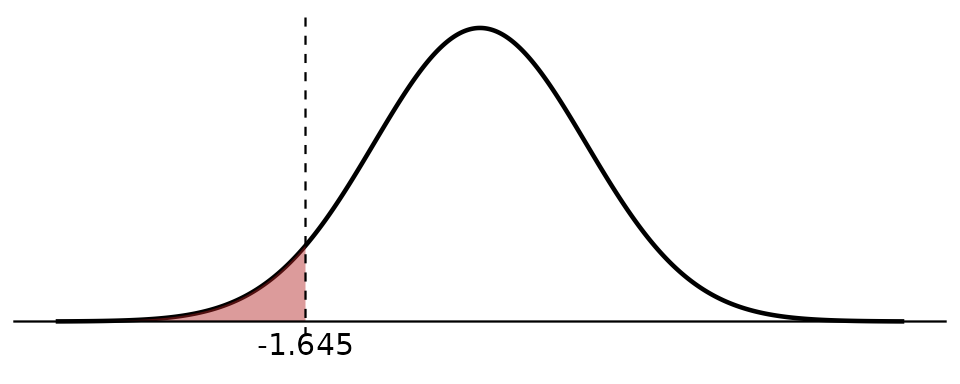
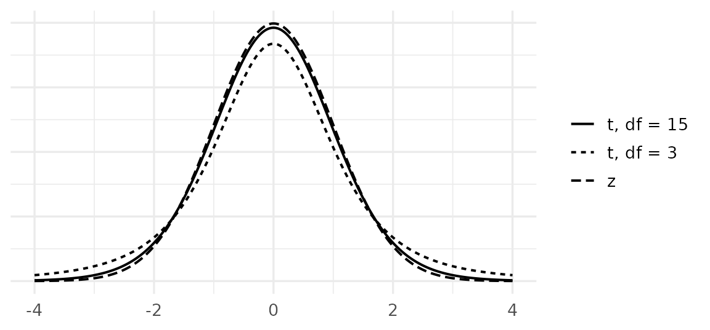
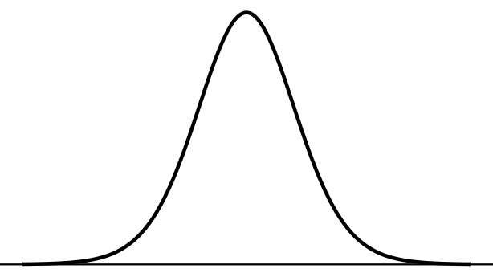
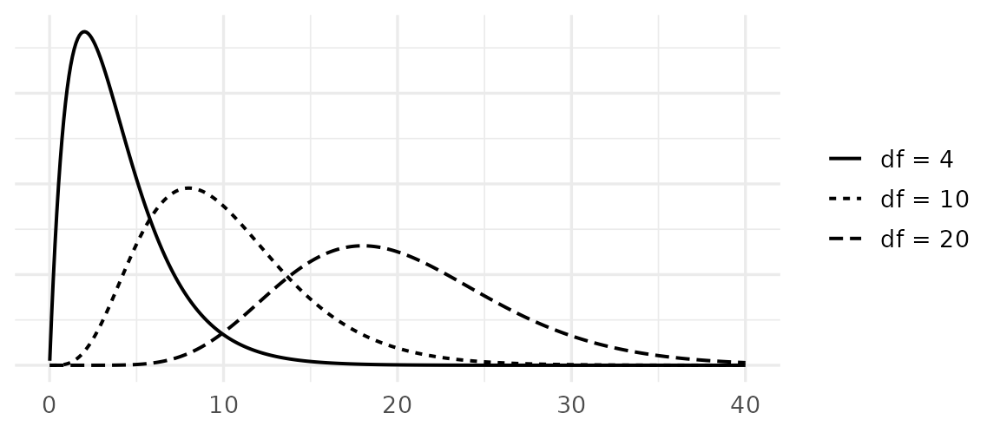

2 One-Sample Inference
2.1 Mean, \(\sigma\) Known
Learning Objectives
- Recognize when the \(z\) method for one mean applies.
- Construct and interpret a confidence interval for \(\mu\) when \(\sigma\) is known.
- Carry out a \(z\) test for \(\mu\) in five steps and write the conclusion.
Concept
Sometimes the population standard deviation \(\sigma\) is known from a large source, such as a census or many years of administrative records, while the mean may have changed. For example, the spread of daily wages in an industry is fairly stable, but the mean wage changes with prices and minimum-wage policy.
When \(\sigma\) is known, Chapter 1 tells us that \[ z = \frac{\bar{x} - \mu}{\sigma/\sqrt{n}} \] follows the standard normal distribution, provided the population is normal or \(n \ge 30\). Both the confidence interval and the test use this result.
Formulas and Conditions
Conditions: \(\sigma\) is known; a random sample; the population is normal or \(n \ge 30\).
\((1-\alpha)100\%\) confidence interval for \(\mu\) \[ \bar{x} \pm z_{1-\alpha/2}\,\frac{\sigma}{\sqrt{n}} \] For a 95% CI, \(z_{0.975} = 1.960\); for a 99% CI, \(z_{0.995} = 2.576\).
Test statistic for \(H_0: \mu = \mu_0\) \[ z_{\text{cal}} = \frac{\bar{x} - \mu_0}{\sigma/\sqrt{n}} \]
| \(H_1\) | Critical region |
|---|---|
| \(\mu \ne \mu_0\) | \(z_{\text{cal}} < z_{\alpha/2}\) or \(z_{\text{cal}} > z_{1-\alpha/2}\) |
| \(\mu < \mu_0\) | \(z_{\text{cal}} < z_{\alpha}\) |
| \(\mu > \mu_0\) | \(z_{\text{cal}} > z_{1-\alpha}\) |
Worked Example
Worked Example 2.1.1. From many years of Labour Force Survey records, the standard deviation of the daily wage of construction workers in Chiang Mai is \(\sigma\) = 60 baht. A labour union surveys 36 workers and finds a mean daily wage of \(\bar{x}\) = 358.4 baht (hypothetical figures). The Ministry of Labour reports a mean of 380 baht; the union believes the true mean is lower.
- Construct a 95% confidence interval for the mean daily wage.
- At \(\alpha\) = 0.05, test whether the mean daily wage is less than 380 baht.
Your Turn
TipSolution: Your Turn 2.1.1
(a) \(\sigma/\sqrt{n} = 12/\sqrt{49} = 1.7143\); \(214.6 \pm 1.960(1.7143) = 214.6 \pm 3.36\). 95% CI: (211.24, 217.96). We are 95% confident that the mean price of a 5-kg bag of jasmine rice is between 211.24 and 217.96 baht.
(b)
Step 1. \(H_0: \mu = 210 \quad H_1: \mu \ne 210\)
Step 2. \(\alpha\) = 0.05
Step 3. \(z_{\text{cal}} = \dfrac{214.6 - 210}{1.7143} = 2.683\)
Step 4. \(z_{0.025} = -1.960\), \(z_{0.975} = 1.960\). Critical region: \(z_{\text{cal}} < -1.960\) or \(z_{\text{cal}} > 1.960\).
Step 5. \(z_{\text{cal}} = 2.683\) falls in the critical region (\(2.683 > 1.960\)), so we reject \(H_0\). That is, the mean price of a 5-kg bag of jasmine rice is different from 210 baht at the 0.05 level of significance; since \(\bar{x}\) = 214.6, the mean price is higher than 210 baht.
Formula Summary
| Formula | |
|---|---|
| Conditions | \(\sigma\) known; population normal or \(n \ge 30\) |
| \((1-\alpha)100\%\) CI for \(\mu\) | \(\bar{x} \pm z_{1-\alpha/2}\,\sigma/\sqrt{n}\) |
| Test statistic | \(z_{\text{cal}} = \dfrac{\bar{x}-\mu_0}{\sigma/\sqrt{n}}\) |
| Critical region | \(\ne\): \(z_{\text{cal}} < z_{\alpha/2}\) or \(z_{\text{cal}} > z_{1-\alpha/2}\); \(<\): \(z_{\text{cal}} < z_{\alpha}\); \(>\): \(z_{\text{cal}} > z_{1-\alpha}\) |
Exercises
2.1.1 Utility records show that the standard deviation of the monthly electricity bill of households in a city is 320 baht. A sample of 64 households has a mean bill of 1,240 baht (hypothetical figures). Construct a 99% confidence interval for the mean monthly bill.
TipSolution: Exercise 2.1.1
\(\sigma/\sqrt{n} = 320/\sqrt{64} = 40\); \(z_{0.995} = 2.576\). \(1240 \pm 2.576(40) = 1240 \pm 103.04\). 99% CI: (1,136.96, 1,343.04). We are 99% confident that the mean monthly electricity bill is between 1,136.96 and 1,343.04 baht.
2.1.2 A company claims that the mean monthly sales per salesperson are more than 150 thousand baht. The standard deviation is known to be 24 thousand baht. A sample of 40 salespeople has a mean of 156.2 thousand baht (hypothetical figures). Test the claim at \(\alpha\) = 0.01.
TipSolution: Exercise 2.1.2
Step 1. \(H_0: \mu = 150 \quad H_1: \mu > 150\)
Step 2. \(\alpha\) = 0.01
Step 3. \(\sigma/\sqrt{n} = 24/\sqrt{40} = 3.7947\); \(z_{\text{cal}} = (156.2 - 150)/3.7947 = 1.634\)
Step 4. \(z_{0.99} = 2.326\). Critical region: \(z_{\text{cal}} > 2.326\).
Step 5. \(z_{\text{cal}} = 1.634\) does not fall in the critical region (\(1.634 < 2.326\)), so we accept \(H_0\). That is, the mean monthly sales per salesperson are equal to 150 thousand baht at the 0.01 level of significance.
2.1.3 The standard deviation of savings deposits at a bank is known to be 12,000 baht. A sample of 100 accounts has a mean balance of 52,100 baht (hypothetical figures).
- At \(\alpha\) = 0.05, test whether the mean balance is different from 50,000 baht.
- Construct a 95% CI for the mean balance. Does it agree with (a)?
TipSolution: Exercise 2.1.3
(a) \(H_0: \mu = 5\times 10^{4} \quad H_1: \mu \ne 5\times 10^{4}\); \(\alpha\) = 0.05. \(\sigma/\sqrt{n} = 1200\); \(z_{\text{cal}} = (5.21\times 10^{4} - 5\times 10^{4})/1200 = 1.750\). Critical region: \(z_{\text{cal}} < -1.960\) or \(z_{\text{cal}} > 1.960\). \(z_{\text{cal}}\) does not fall in the critical region (\(-1.960 < 1.750 < 1.960\)), so we accept \(H_0\). That is, the mean balance is equal to 50,000 baht at the 0.05 level of significance.
(b) \(5.21\times 10^{4} \pm 1.960(1200)\): 95% CI (49,748.00, 54,452.00). The interval contains 50,000, which agrees with accepting \(H_0\) in (a).
2.2 Mean, \(\sigma\) Unknown
Learning Objectives
- Use the \(t\) distribution when \(\sigma\) is unknown and read the \(t\) table (Table 5).
- Construct and interpret a confidence interval for \(\mu\) using \(s\).
- Carry out a \(t\) test for \(\mu\) in five steps.
- Use a confidence interval to reach the decision of a two-sided test.
Concept
In practice \(\sigma\) is almost never known. We replace it by the sample standard deviation \(s\). Because \(s\) itself varies from sample to sample, the statistic \[ t = \frac{\bar{x} - \mu}{s/\sqrt{n}} \] is more spread out than \(z\). It follows a \(t\) distribution with \(\text{df} = n - 1\) degrees of freedom, provided the population is normal. For moderate or large \(n\) the method still works well when the population is not exactly normal.

Formulas and Conditions
Conditions: \(\sigma\) unknown; a random sample; the population is approximately normal (less important when \(n\) is large).
\((1-\alpha)100\%\) confidence interval for \(\mu\) \[ \bar{x} \pm t_{1-\alpha/2,\,n-1}\,\frac{s}{\sqrt{n}} \]
Test statistic for \(H_0: \mu = \mu_0\), with \(\text{df} = n-1\) \[ t_{\text{cal}} = \frac{\bar{x} - \mu_0}{s/\sqrt{n}} \]
| \(H_1\) | Critical region |
|---|---|
| \(\mu \ne \mu_0\) | \(t_{\text{cal}} < t_{\alpha/2,\,n-1}\) or \(t_{\text{cal}} > t_{1-\alpha/2,\,n-1}\) |
| \(\mu < \mu_0\) | \(t_{\text{cal}} < t_{\alpha,\,n-1}\) |
| \(\mu > \mu_0\) | \(t_{\text{cal}} > t_{1-\alpha,\,n-1}\) |
Reading the \(t\) Table
Table 5 gives \(t\) values with a stated area to the left (columns) for each df (rows). Like \(z\), the \(t\) curve is symmetric, so the table lists only the right half: \(t_{0.05,\,\text{df}} = -t_{0.95,\,\text{df}}\).
Worked Example 2.2.1. Find (a) \(t_{0.975,\,24}\), (b) \(t_{0.05,\,15}\), (c) \(t_{0.995,\,40}\).



TipSolution: Your Turn 2.2.1
\(t_{0.975,\,15} = 2.131\)
\(t_{0.01,\,20} = -t_{0.99,\,20} = -2.528\)
\(t_{0.95,\,60} = 1.671\)
Worked Example
Worked Example 2.2.2. A food-delivery platform claims that its riders in Chiang Mai earn more than 600 baht per day on average. A researcher records the daily earnings (baht) of 25 randomly selected riders (hypothetical data):
| 724 | 756 | 588 | 693 | 777 |
| 657 | 631 | 777 | 549 | 444 |
| 511 | 614 | 754 | 593 | 698 |
| 541 | 616 | 793 | 670 | 698 |
| 555 | 668 | 510 | 740 | 567 |
The sample gives \(\bar{x}\) = 644.96 and \(s\) = 96.6499 baht.
- Construct a 95% confidence interval for the mean daily earnings.
- At \(\alpha\) = 0.05, test the platform’s claim.
Confidence Intervals and Two-Sided Tests
A \((1-\alpha)100\%\) CI and a two-sided test at level \(\alpha\) always agree:
- if \(\mu_0\) is outside the CI, a two-sided test rejects \(H_0: \mu = \mu_0\);
- if \(\mu_0\) is inside the CI, the test accepts \(H_0\).
For the riders, the 95% CI (605.06, 684.86) does not contain 600, so a two-sided test of \(H_0: \mu = 600\) at \(\alpha\) = 0.05 would reject \(H_0\). It does contain 620, so the same test of \(H_0: \mu = 620\) would accept \(H_0\).
Your Turn
TipSolution: Your Turn 2.2.2
(a) df = 15, \(t_{0.975,\,15} = 2.131\); \(s/\sqrt{n} = 784/\sqrt{16} = 196\); \(9420 \pm 2.131(196) = 9420 \pm 417.676\). 95% CI: (9,002.32, 9,837.68). We are 95% confident that the mean monthly rent is between 9,002.32 and 9,837.68 baht.
(b)
Step 1. \(H_0: \mu = 9000 \quad H_1: \mu \ne 9000\)
Step 2. \(\alpha\) = 0.05
Step 3. \(t_{\text{cal}} = \dfrac{9420 - 9000}{196} = 2.143\)
Step 4. df = 15: \(t_{0.025,\,15} = -2.131\), \(t_{0.975,\,15} = 2.131\). Critical region: \(t_{\text{cal}} < -2.131\) or \(t_{\text{cal}} > 2.131\).
Step 5. \(t_{\text{cal}} = 2.143\) falls in the critical region (\(2.143 > 2.131\)), so we reject \(H_0\). That is, the mean monthly rent is different from 9,000 baht at the 0.05 level of significance; since \(\bar{x}\) = 9,420, the mean rent is higher than 9,000 baht.
(c) Yes. The 95% CI does not contain 9,000, so the two-sided test at \(\alpha\) = 0.05 rejects \(H_0\).
Formula Summary
| Formula | |
|---|---|
| Conditions | \(\sigma\) unknown; population approximately normal |
| \((1-\alpha)100\%\) CI for \(\mu\) | \(\bar{x} \pm t_{1-\alpha/2,\,n-1}\,s/\sqrt{n}\) |
| Test statistic | \(t_{\text{cal}} = \dfrac{\bar{x}-\mu_0}{s/\sqrt{n}}\), df \(= n-1\) |
| Critical region | \(\ne\): \(t_{\text{cal}} < t_{\alpha/2,\,n-1}\) or \(t_{\text{cal}} > t_{1-\alpha/2,\,n-1}\); \(<\): \(t_{\text{cal}} < t_{\alpha,\,n-1}\); \(>\): \(t_{\text{cal}} > t_{1-\alpha,\,n-1}\) |
| CI and test | two-sided test at \(\alpha\) rejects \(H_0\) \(\iff\) \(\mu_0\) is outside the \((1-\alpha)100\%\) CI |
Exercises
2.2.1 A survey of 20 households in a district finds a mean household debt of 184,500 baht with a standard deviation of 41,200 baht (hypothetical figures). At \(\alpha\) = 0.05, test whether the mean household debt is more than 170,000 baht.
TipSolution: Exercise 2.2.1
Step 1. \(H_0: \mu = 1.7\times 10^{5} \quad H_1: \mu > 1.7\times 10^{5}\)
Step 2. \(\alpha\) = 0.05
Step 3. \(s/\sqrt{n} = 4.12\times 10^{4}/\sqrt{20} = 9212.6001\); \(t_{\text{cal}} = (1.845\times 10^{5} - 1.7\times 10^{5})/9212.6001 = 1.574\)
Step 4. df = 19: \(t_{0.95,\,19} = 1.729\). Critical region: \(t_{\text{cal}} > 1.729\).
Step 5. \(t_{\text{cal}} = 1.574\) does not fall in the critical region (\(1.574 < 1.729\)), so we accept \(H_0\). That is, the mean household debt in the district is equal to 170,000 baht at the 0.05 level of significance.
2.2.2 A sample of 30 gig workers reports a mean of 47.3 working hours per week with a standard deviation of 8.4 hours (hypothetical figures). Construct a 99% confidence interval for the mean weekly working hours.
TipSolution: Exercise 2.2.2
df = 29, \(t_{0.995,\,29} = 2.756\); \(s/\sqrt{n} = 8.4/\sqrt{30} = 1.5336\); \(47.3 \pm 2.756(1.5336) = 47.3 \pm 4.2266\). 99% CI: (43.07, 51.53). We are 99% confident that the mean weekly working hours of gig workers are between 43.07 and 51.53 hours.
2.2.3 A 95% confidence interval for the mean monthly interest rate charged by informal lenders is (12.4%, 15.8%) (hypothetical figures). Without further calculation, what is the decision of a two-sided test at \(\alpha\) = 0.05 for (a) \(H_0: \mu = 16\), (b) \(H_0: \mu = 15\)?
TipSolution: Exercise 2.2.3
- 16 is outside the CI, so we reject \(H_0\).
- 15 is inside the CI, so we accept \(H_0\).
2.2.4 Find (a) \(t_{0.90,\,12}\), (b) \(t_{0.025,\,8}\), (c) \(t_{0.99,\,100}\).
TipSolution: Exercise 2.2.4
- 1.356 (b) \(-t_{0.975,\,8} = -2.306\) (c) 2.364
2.3 Proportion
Learning Objectives
- Check the conditions for the normal approximation to \(\hat{p}\).
- Construct and interpret a confidence interval for a population proportion \(p\).
- Carry out a \(z\) test for \(p\) in five steps.
- Explain why the CI uses \(\hat{p}\) in the standard error but the test uses \(p_0\).
Concept
Many economic questions are about proportions: the share of households in debt, the labour force participation rate, the share of firms that raised prices, or the share of people who used a stimulus measure. Each person or firm either has the characteristic (“success”) or not.
With \(x\) successes in a sample of \(n\), the sample proportion is \(\hat{p} = x/n\). From Chapter 1, \(\hat{p}\) is approximately normal with mean \(p\) and standard error \(\sqrt{p(1-p)/n}\) when the sample is large enough.
Formulas and Conditions
\((1-\alpha)100\%\) confidence interval for \(p\) \[ \hat{p} \pm z_{1-\alpha/2}\sqrt{\frac{\hat{p}(1-\hat{p})}{n}} \qquad \text{condition: } n\hat{p} \ge 5 \text{ and } n(1-\hat{p}) \ge 5 \]
Test statistic for \(H_0: p = p_0\) \[ z_{\text{cal}} = \frac{\hat{p} - p_0}{\sqrt{p_0(1-p_0)/n}} \qquad \text{condition: } np_0 \ge 5 \text{ and } n(1-p_0) \ge 5 \]
The critical regions are the same as for the \(z\) test of a mean.
Worked Example
Worked Example 2.3.1. The government ran a co-payment scheme in which it paid part of the price of goods bought at small shops. An economist claims that more than 30% of households in Chiang Mai used the scheme. In a random sample of 400 households, 148 used it (hypothetical figures).
- Construct a 95% confidence interval for the proportion of households that used the scheme.
- At \(\alpha\) = 0.05, test the economist’s claim.
Your Turn
TipSolution: Your Turn 2.3.1
\(\hat{p} = 160/250 = 0.64\)
(a) \(\sqrt{0.64(0.36)/250} = 0.0304\); \(0.64 \pm 1.960(0.0304) = 0.64 \pm 0.0596\). 95% CI: (0.5804, 0.6996). We are 95% confident that the proportion of graduates who find a job within six months is between 0.5804 and 0.6996.
(b)
Step 1. \(H_0: p = 0.70 \quad H_1: p \ne 0.70\)
Step 2. \(\alpha\) = 0.05
Step 3. \(\sqrt{0.70(0.30)/250} = 0.029\); \(z_{\text{cal}} = (0.64 - 0.70)/0.029 = -2.069\)
Step 4. Critical region: \(z_{\text{cal}} < -1.960\) or \(z_{\text{cal}} > 1.960\).
Step 5. \(z_{\text{cal}} = -2.069\) falls in the critical region (\(-2.069 < -1.960\)), so we reject \(H_0\). That is, the proportion of graduates who find a job within six months is different from 0.70 at the 0.05 level of significance; since \(\hat{p}\) = 0.64, the proportion is lower than 0.70.
Formula Summary
| Confidence interval | Hypothesis test | |
|---|---|---|
| Standard error | \(\sqrt{\hat{p}(1-\hat{p})/n}\) | \(\sqrt{p_0(1-p_0)/n}\) |
| Condition | \(n\hat{p} \ge 5\), \(n(1-\hat{p}) \ge 5\) | \(np_0 \ge 5\), \(n(1-p_0) \ge 5\) |
| Formula | \(\hat{p} \pm z_{1-\alpha/2}\sqrt{\hat{p}(1-\hat{p})/n}\) | \(z_{\text{cal}} = \dfrac{\hat{p}-p_0}{\sqrt{p_0(1-p_0)/n}}\) |
Exercises
2.3.1 In a survey of 500 small businesses, 95 had borrowed from an informal lender in the past year (hypothetical figures). Construct a 99% confidence interval for the proportion of small businesses that borrowed from an informal lender.
TipSolution: Exercise 2.3.1
\(\hat{p} = 0.19\); \(\sqrt{0.19(0.81)/500} = 0.0175\); \(z_{0.995} = 2.576\); \(0.19 \pm 2.576(0.0175) = 0.19 \pm 0.0451\). 99% CI: (0.1449, 0.2351). We are 99% confident that the proportion of small businesses that borrowed from an informal lender is between 0.1449 and 0.2351.
2.3.2 A bank believes that less than 25% of its credit-card holders pay only the minimum amount each month. In a sample of 300 card holders, 66 paid only the minimum (hypothetical figures). Test the bank’s belief at \(\alpha\) = 0.05.
TipSolution: Exercise 2.3.2
Step 1. \(H_0: p = 0.25 \quad H_1: p < 0.25\)
Step 2. \(\alpha\) = 0.05
Step 3. \(\hat{p} = 0.22\); \(\sqrt{0.25(0.75)/300} = 0.025\); \(z_{\text{cal}} = (0.22 - 0.25)/0.025 = -1.200\)
Step 4. \(z_{0.05} = -1.645\). Critical region: \(z_{\text{cal}} < -1.645\).
Step 5. \(z_{\text{cal}} = -1.200\) does not fall in the critical region (\(-1.200 > -1.645\)), so we accept \(H_0\). That is, the proportion of card holders who pay only the minimum is equal to 0.25 at the 0.05 level of significance.
2.3.3 A researcher wants to test \(H_0: p = 0.05\) for the unemployment rate in a district using a sample of 60 people. Is the \(z\) test appropriate? Explain.
TipSolution: Exercise 2.3.3
No. \(np_0 = 60(0.05) = 3 < 5\), so the normal approximation is not reliable. A larger sample (at least 100 people) is needed.
2.4 Variance
Learning Objectives
- Explain why the variance matters in economics (risk, volatility, price stability).
- Read the chi-square table (Table 6).
- Construct and interpret a confidence interval for \(\sigma^2\) and \(\sigma\).
- Carry out a chi-square test for \(\sigma^2\) in five steps.
Concept
The mean tells us the typical value; the variance tells us how much values vary. In finance the standard deviation of returns is the most common measure of risk (volatility). A central bank cares about the stability of prices, and a firm cares about the stability of its sales.
To make inferences about \(\sigma^2\) we use the sample variance \(s^2\). If the population is normal, \[ \chi^2 = \frac{(n-1)s^2}{\sigma^2} \] follows a chi-square distribution with \(n-1\) degrees of freedom. The chi-square distribution takes only positive values and is skewed to the right.

Reading the Chi-Square Table
Table 6 gives \(\chi^2\) values with a stated area to the left, for df = 1 to 100. The curve is not symmetric, so for a two-sided test or a CI we read two different values from the table; we cannot use a minus sign.
Worked Example 2.4.1. For df = 23, find \(\chi^2_{0.025,\,23}\), \(\chi^2_{0.975,\,23}\) and \(\chi^2_{0.95,\,23}\).


TipSolution: Your Turn 2.4.1
\(\chi^2_{0.05,\,19} = 10.1\)
\(\chi^2_{0.995,\,10} = 25.2\)
\(\chi^2_{0.025,\,30} = 16.8\)
Formulas and Conditions
Condition: a random sample from a normal population.
\((1-\alpha)100\%\) confidence interval for \(\sigma^2\) \[ \left(\frac{(n-1)s^2}{\chi^2_{1-\alpha/2,\,n-1}},\; \frac{(n-1)s^2}{\chi^2_{\alpha/2,\,n-1}}\right) \] Take the square root of both limits to get a CI for \(\sigma\). The larger chi-square value gives the lower limit. The interval is not symmetric about \(s^2\).
Test statistic for \(H_0: \sigma^2 = \sigma_0^2\), with df \(= n-1\) \[ \chi^2_{\text{cal}} = \frac{(n-1)s^2}{\sigma_0^2} \]
| \(H_1\) | Critical region |
|---|---|
| \(\sigma^2 \ne \sigma_0^2\) | \(\chi^2_{\text{cal}} < \chi^2_{\alpha/2,\,n-1}\) or \(\chi^2_{\text{cal}} > \chi^2_{1-\alpha/2,\,n-1}\) |
| \(\sigma^2 < \sigma_0^2\) | \(\chi^2_{\text{cal}} < \chi^2_{\alpha,\,n-1}\) |
| \(\sigma^2 > \sigma_0^2\) | \(\chi^2_{\text{cal}} > \chi^2_{1-\alpha,\,n-1}\) |
A claim about \(\sigma\) is tested as the same claim about \(\sigma^2\): for example \(\sigma > 2\) is \(\sigma^2 > 4\).
Worked Example
Worked Example 2.4.2. A fund manager states that the standard deviation of the fund’s monthly return is 2%. An investor suspects the fund is riskier. Over the last 24 months the standard deviation of the monthly return was \(s\) = 2.6% (hypothetical figures). Assume monthly returns are normally distributed.
- Construct a 95% confidence interval for the variance and the standard deviation of the monthly return.
- At \(\alpha\) = 0.05, test whether the standard deviation is more than 2%.
Your Turn
TipSolution: Your Turn 2.4.2
\(s^2 = 20.25\), df = 19, \((n-1)s^2 = 384.75\); \(\chi^2_{0.025,\,19} = 8.91\), \(\chi^2_{0.975,\,19} = 32.9\).
(a) CI for \(\sigma^2\): \((384.75/32.9,\ 384.75/8.91) = (11.6945,\ 43.1818)\). CI for \(\sigma\): (3.4197, 6.5713). We are 95% confident that the standard deviation of the weekly pork price is between 3.4197 and 6.5713 baht.
(b)
Step 1. \(H_0: \sigma^2 = 9 \quad H_1: \sigma^2 \ne 9\)
Step 2. \(\alpha\) = 0.05
Step 3. \(\chi^2_{\text{cal}} = 384.75/9 = 42.750\)
Step 4. Critical region: \(\chi^2_{\text{cal}} < 8.91\) or \(\chi^2_{\text{cal}} > 32.9\).
Step 5. \(\chi^2_{\text{cal}} = 42.750\) falls in the critical region (\(42.750 > 32.9\)), so we reject \(H_0\). That is, the standard deviation of the weekly pork price is different from 3 baht at the 0.05 level of significance; since \(s\) = 4.5, it is higher than 3 baht, so the policy target was not met.
Formula Summary
| Formula | |
|---|---|
| Condition | population normal |
| \((1-\alpha)100\%\) CI for \(\sigma^2\) | \(\left(\dfrac{(n-1)s^2}{\chi^2_{1-\alpha/2,\,n-1}},\ \dfrac{(n-1)s^2}{\chi^2_{\alpha/2,\,n-1}}\right)\); square root for \(\sigma\) |
| Test statistic | \(\chi^2_{\text{cal}} = \dfrac{(n-1)s^2}{\sigma_0^2}\), df \(= n-1\) |
| Critical region | \(\ne\): \(\chi^2_{\text{cal}} < \chi^2_{\alpha/2}\) or \(> \chi^2_{1-\alpha/2}\); \(<\): \(\chi^2_{\text{cal}} < \chi^2_{\alpha}\); \(>\): \(\chi^2_{\text{cal}} > \chi^2_{1-\alpha}\) |
Exercises
2.4.1 Before a new ordering system, the standard deviation of a shop’s daily sales was 10 units. After the system was introduced, 16 days of sales had a standard deviation of 7.2 units (hypothetical figures). At \(\alpha\) = 0.05, test whether the standard deviation is now less than 10 units. Assume normality.
TipSolution: Exercise 2.4.1
Step 1. \(H_0: \sigma^2 = 100 \quad H_1: \sigma^2 < 100\)
Step 2. \(\alpha\) = 0.05
Step 3. \(\chi^2_{\text{cal}} = 15(51.84)/100 = 7.776\)
Step 4. \(\chi^2_{0.05,\,15} = 7.26\). Critical region: \(\chi^2_{\text{cal}} < 7.26\).
Step 5. \(\chi^2_{\text{cal}} = 7.776\) does not fall in the critical region (\(7.776 > 7.26\)), so we accept \(H_0\). That is, the standard deviation of daily sales is equal to 10 units at the 0.05 level of significance.
2.4.2 The daily change in an exchange rate over 25 trading days has a standard deviation of 0.35 baht (hypothetical figures). Assuming normality, construct a 90% confidence interval for the standard deviation of the daily change.
TipSolution: Exercise 2.4.2
\((n-1)s^2 = 24(0.1225) = 2.94\); \(\chi^2_{0.05,\,24} = 13.8\), \(\chi^2_{0.95,\,24} = 36.4\). CI for \(\sigma^2\): (0.0808, 0.2130); CI for \(\sigma\): (0.2843, 0.4615). We are 90% confident that the standard deviation of the daily change is between 0.2843 and 0.4615 baht.
2.4.3 Explain why the confidence interval for \(\sigma^2\) is not of the form “estimate \(\pm\) margin of error”.
TipSolution: Exercise 2.4.3
The chi-square distribution is skewed to the right, so the two critical values are not the same distance from the centre. Dividing \((n-1)s^2\) by them gives limits that are not equally far from \(s^2\).